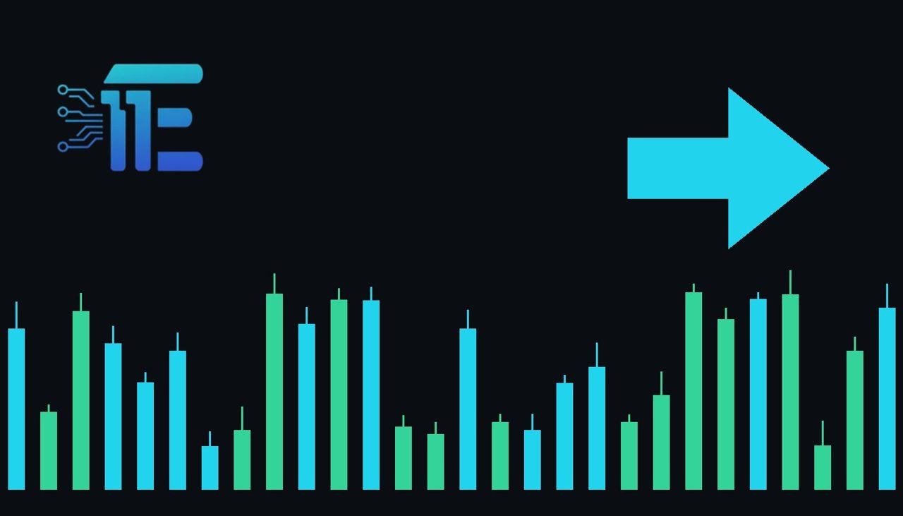

Hot Inflation and Fed Speeches Put Rate Hikes in Focusអតិផរណាខ្ពស់និងសុន្ទរកថា Fed ជំរុញការយកចិត្តទុកដាក់លើអត្រាការប្រាក់
XAU/USD impact: ◆ Mixedផលប៉ះពាល់លើ XAU/USD: ◆ ចម្រុះ

Rising consumer prices and upcoming Federal Reserve commentary could test market resilience. The outcome heavily impacts the US dollar and gold valuations.
ការឡើងថ្លៃទំនិញអ្នកប្រើប្រាស់និងការអត្ថាធិប្បាយពីធនាគារកណ្តាលនឹងសាកល្បងភាពធន់របស់ទីផ្សារ។ លទ្ធផលនេះប៉ះពាល់យ៉ាងខ្លាំងដល់តម្លៃដុល្លារអាមេរិកនិងមាស។
Consumer prices in the United States continue to show strong upward momentum, with rising costs pointing toward potential action from the central bank. Market participants are bracing for the upcoming inflation readings alongside a heavy lineup of Federal Reserve speakers. These developments arrive as broader economic rotations, including rallies in the stock market beyond major technology shares, face a crucial test of resilience.
តម្លៃទំនិញអ្នកប្រើប្រាស់នៅក្នុងសហរដ្ឋអាមេរិកបន្តបង្ហាញពីសន្ទុះកើនឡើងយ៉ាងខ្លាំង ដោយការឡើងថ្លៃទំនិញបង្ហាញពីសក្តានុពលនៃការចាត់វិធានការពីធនាគារកណ្តាល។ អ្នកចូលរួមក្នុងទីផ្សារកំពុងត្រៀមខ្លួនសម្រាប់ទិន្នន័យអតិផរណាខាងមុខនេះ រួមជាមួយវត្តមាននៃសុន្ទរកថាជាច្រើនពីមន្ត្រី Fed។ ការវិវត្តទាំងនេះកើតឡើងស្របពេលដែលការបង្វិលទ الاستثمار ក៏ដូចជាការកើនឡើងនៃទីផ្សារភាគហ៊ុនក្រៅពីក្រុមហ៊ុនបច្ចេកវិទ្យាធំៗ កំពុងប្រឈមមុខនឹងការសាកល្បងដ៏សំខាន់មួយ។
For XAU/USD, persistent inflation acts as a powerful fundamental driver through multiple transmission channels. On one hand, elevated consumer price growth traditionally enhances the appeal of gold as an inflation hedge. On the other hand, hot price pressures increase the probability of higher borrowing costs and tighter monetary policy from the Federal Reserve. This dynamic directly influences the US dollar and Treasury yields, which share an inverse relationship with bullion.
សម្រាប់គូប្រៀបធៀប XAU/USD ម្យ៉ាងវិញទៀត ការកើនឡើងនៃតម្លៃទំនិញអ្នកប្រើប្រាស់ជាប្រពៃណីជួយបង្កើនភាពទាក់ទាញរបស់មាសជាមធ្យោបាយការពារអតិផរណា។ ម្យ៉ាងវិញទៀត សម្ពាធតម្លៃខ្ពស់បង្កើនលទ្ធភាពនៃការដំឡើងថ្លៃដើមខ្ចីប្រាក់ និងគោលនយោបាយរូបិយវត្ថុរឹតបន្តឹងពីធនាគារកណ្តាល។ សក្ដានុពលនេះមានឥទ្ធិពលដោយផ្ទាល់ទៅលើដុល្លារអាមេរិកនិងអត្រាបុប្ផាបាណកបំណុល ដែលមានទំនាក់ទំនងបញ្ច្រាសគ្នាទៅនឹងលោហៈមានតម្លៃនេះ។
A balanced market view highlights diverging scenarios for precious metals traders. If the upcoming data and official commentary signal aggressive monetary tightening to combat rising prices, the resulting strength in the US dollar and higher real yields would typically pressure gold prices downward. Conversely, if stubborn inflation stirs concerns over economic stability without triggering immediate policy tightening, safe-haven demand and inflation hedging could provide solid support for the precious metal.
ទស្សនៈទីផ្សារប្រកបដោយតុល្យភាពបង្ហាញពីសេណារីយ៉ូផ្សេងៗគ្នាសម្រាប់អ្នកជួញដូរលោហៈមានតម្លៃ។ ប្រសិនបើទិន្នន័យខាងមុខនិងការអត្ថាធិប្បាយផ្លូវការបញ្ជាក់ពីការរឹតបន្តឹងរូបិយវត្ថុយ៉ាងខ្លាំងក្លាដើម្បីទប់ទល់នឹងការឡើងថ្លៃទំនិញ កម្លាំងប្រាក់ដុល្លារអាមេរិកនិងអត្រាផលចំណេញពិតប្រាកដខ្ពស់ជាទូទៅនឹងដាក់សម្ពាធទម្លាក់តម្លៃមាស។ ផ្ទុយទៅវិញ ប្រសិនបើអតិផរណាចចេសបង្កើតឱ្យមានការបារម្ភអំពីស្ថិរភាពសេដ្ឋកិច្ចដោយមិនបង្កឱ្យមានការរឹតបន្តឹងគោលនយោបាយភ្លាមៗ តម្រូវការសុវត្ថិភាពនិងការការពារអតិផរណាក៏អាចផ្តល់ការគាំទ្រយ៉ាងរឹងមាំដល់មាសផងដែរ។
Traders should monitor upcoming consumer price releases and official statements from Federal Reserve officials closely. Any surprises in inflation figures or shifts in central bank rhetoric regarding borrowing costs will likely dictate near-term direction for the US dollar and influence broader market sentiment.
អ្នកជួញដូរគួរតែតាមដានរបាយការណ៍តម្លៃអ្នកប្រើប្រាស់ខាងមុខនិងសេចក្តីថ្លែងការណ៍ផ្លូវការពីមន្ត្រី Fed ឱ្យបានដិតដល់។ រាល់ការភ្ញាក់ផ្អើលនៅក្នុងតួលេខអតិផរណា ឬការផ្លាស់ប្តូរនៅក្នុងវោហាសាស្ត្ររបស់ធនាគារកណ្តាលទាក់ទងនឹងថ្លៃដើមខ្ចីប្រាក់ ទំនងជានឹងកំណត់ទិសដៅរយៈពេលខ្លីសម្រាប់ដុល្លារអាមេរិកនិងមានឥទ្ធិពលលើអារម្មណ៍ទីផ្សារទូទៅ។
Key takeawaysចំណុចសំខាន់ៗ
- Rising consumer prices and Fed speeches are putting monetary policy back in focus.
- ការឡើងថ្លៃទំនិញនិងសុន្ទរកថា Fed ធ្វើឱ្យគោលនយោបាយរូបិយវត្ថុក្លាយជាចំណុចផ្តោតសំខាន់។
- Persistent inflation impacts gold through the US dollar, real yields, and safe-haven demand.
- អតិផរណាបន្តប៉ះពាល់ដល់មាសតាមរយៈដុល្លារអាមេរិក អត្រាផលចំណេញ និងតម្រូវការសុវត្ថិភាព។
- Traders must watch upcoming inflation reports and central bank commentary for directional cues.
- អ្នកជួញដូរត្រូវតាមដានរបាយការណ៍អតិផរណានិងការអត្ថាធិប្បាយរបស់ធនាគារកណ្តាលដើម្បីស្វែងរកទិសដៅ។
Original commentary by THE MARKET CODE, based on public reporting from MarketWatch.com - Top Stories. Written with the help of AI. Educational only, not financial advice.
មតិវិភាគដើមដោយ THE MARKET CODE ផ្អែកលើការរាយការណ៍សាធារណៈពី MarketWatch.com - Top Stories។ សរសេរដោយមានជំនួយពី AI។ មាតិកាអប់រំប៉ុណ្ណោះ មិនមែនជាដំបូន្មានហិរញ្ញវត្ថុទេ។